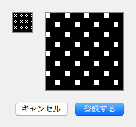
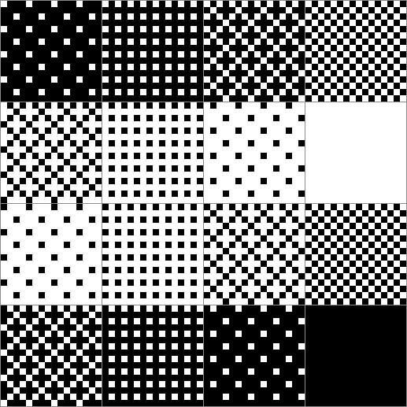

The Pen-style and Tile-pattern Window
This window work that manage(include editing and selecting) pen-style and tile-pattern.(note that this window is not depend on current document because of all pen styles and all tile patterns are shared in the PoCo.app.)

Edit of a pen style
When target pen style is double clicked, the Pen Style Edit sheet appear.
The pattern of a pen style is monochorome(binary).

In above mentiond, the Pen style is shared in the PoCo.app.(That is, the Pen style do not contain into individual document.)
The number of the Pen style is 16.
Edit of a tile pattern
When target tile pattern is double clicked, the Tile Pattern Edit sheet appear.
The pattern of a tile pattern is also monochorome(binary).

Also, In above mentiond, the Tile Pattern is shared in the PoCo.app.(That is, the Tile Pattern do not contain into individual document.)
The number of the Pen style is 16.
Pen pressure
When both width and tint are depend on pen pressure, the maximum of width and the maximum of tint are specified each slider, respectively.
Width allow 1 through 16.
Tint allow 0% through 100%.
Default forms of pen styles and tile patterns
The default forms of the Pen styles illustrate below:(be magnified by visual clarity purpose)

The default forms of the Tile patterns illustrate below:(be magnified by visual clarity purpose)

Note that, in drawing either with pen pressure or with gradually pattern, above described tile patterns are not used. In such case, always their Default patterns are used.